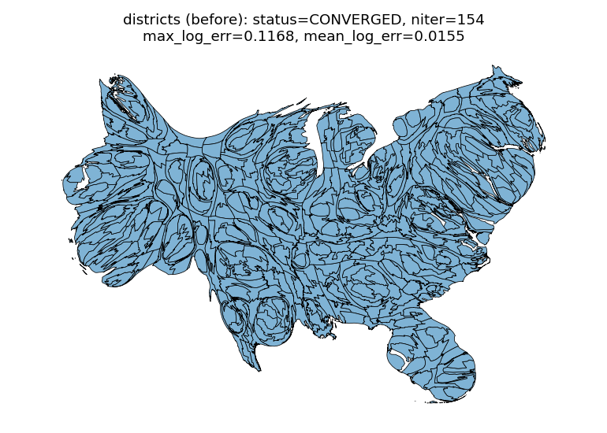
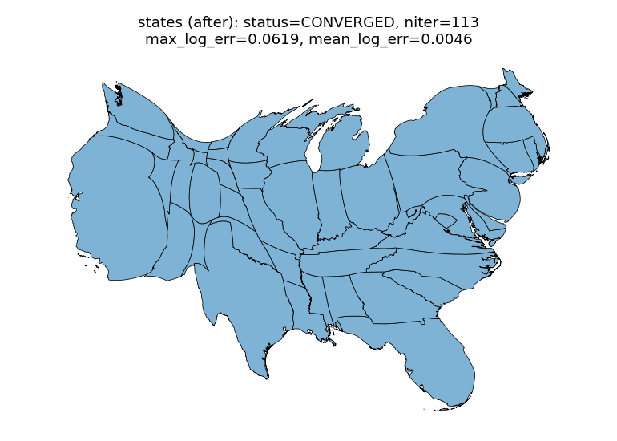
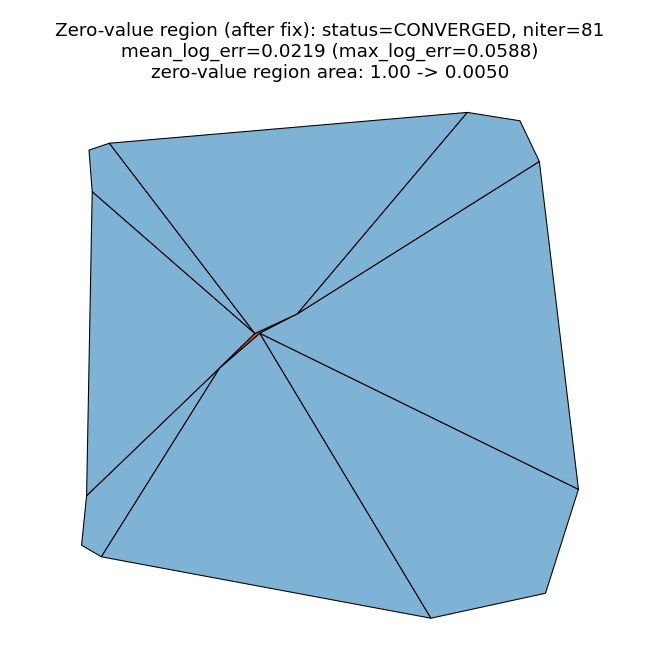
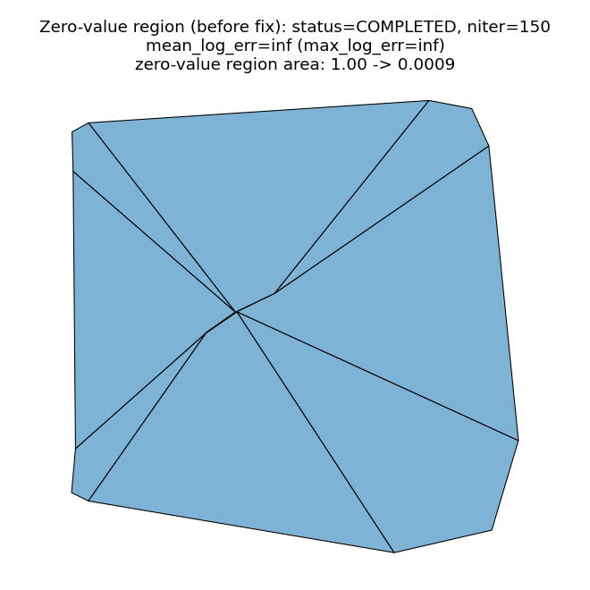

A zero sizing value gave a zero target area, so log2(current/target) was inf for the whole morph (not just that geometry), permanently defeating convergence and emitting ~100 divide-by-zero warnings per run. compute_error_metrics() now floors both sides of the ratio at eps (default 0.0, unclamped); the production call sites pass one flow-grid cell area, since the density field cannot represent an area difference finer than that. Confirmed bit-identical on states and congressional districts at default settings.
Same input, eps = one grid cell. Converged at iteration 154 — bit-identical geometry and error metrics to before, despite those sub-cell fragments.

Congressional districts, default settings, eps=0. Converged at iteration 154. Several real (non-zero) district fragments are smaller than one grid cell at this resolution, but by the time the run approaches its convergence threshold they have grown past it under the flow.

Same input, eps = one grid cell (this PR). Converged at iteration 113 — bit-identical geometry and error metrics to before.
US states, default settings, eps=0 (historical unclamped ratio, monkeypatched in). Converged at iteration 113.

Same input, eps = one grid cell. status=CONVERGED in 81 iterations, mean_log_error=0.0219, no warnings. The zero-value region (center, thin red sliver) shrinks from area 1.00 to 0.0050 — visibly the same mesh shape as before (the eps floor only changes the reported error and hence when the loop stops, not the velocity field driving the geometry), but now the algorithm correctly recognizes it has converged and stops instead of running to n_iter while reporting infinite error.

Synthetic 3x3 grid, center region value=0, eps=0. status=COMPLETED (runs the full 150 iterations, never converges), mean_log_error=inf, max_log_error=inf, and ~100 RuntimeWarning: divide by zero per run (not visible in the image, confirmed in the log).